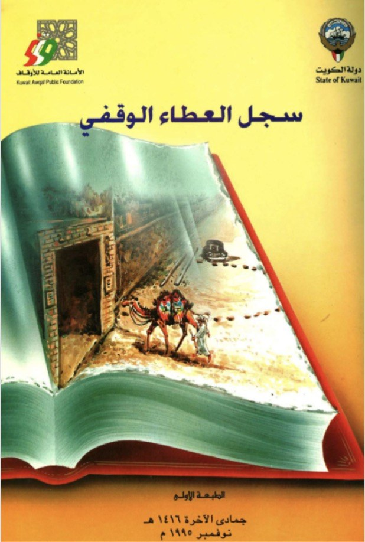
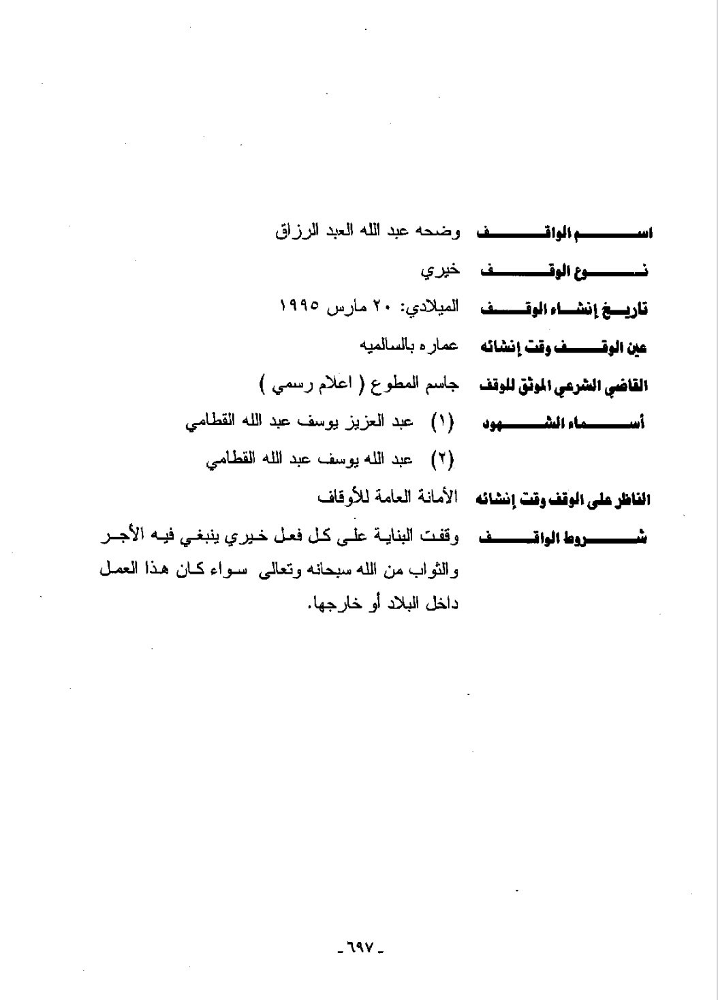

20 March 1995 · Book pages, Sijil Al-Ata Al-Waqfi, Kuwait Awqaf Public Foundation, first edition, Jumada Al-Akhira 1416 AH (November 1995), pages 697 and 698, with the official notice of the Ministry of Justice
The waqf of Wadha Abdullah Al-AbdulRazzaq, witnessed by her sons Abdulaziz and Abdullah Yousef Al-Qatami
What it is
On 20 March 1995 Wadha Abdullah Al-AbdulRazzaq endowed a building in Salmiya (plot 100) as a charitable waqf, «for every good deed that seeks reward from God, inside the country or outside it», with the Awqaf Public Foundation as its overseer. The deed was certified by the judge Jassim Al-Mutawa, and the witnesses were her sons Abdulaziz Yousef Abdulwahab Al-Qatami and Abdullah Yousef Abdulwahab Al-Qatami. Page 697 summarises the waqf; page 698 reproduces the official notice of the Ministry of Justice.
Why it matters
A charitable endowment by the wife of Yousef Abdulwahab Al-Qatami, witnessed by their sons.
Page copies


Notes
Only the first pages are shown here. Family members who sign in can see all 3 pages.
Others named
Sources
Sijil Al-Ata Al-Waqfi, Kuwait Awqaf Public Foundation, first edition, November 1995, pages 697 and 698
How this text was made: Photographed from the printed book. The civil ID numbers on page 698 are blurred for privacy; nothing else on the page is changed.
Open in the interactive site